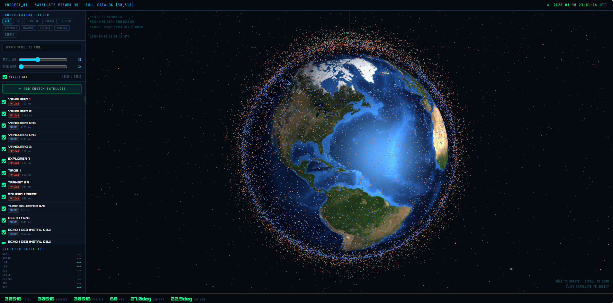
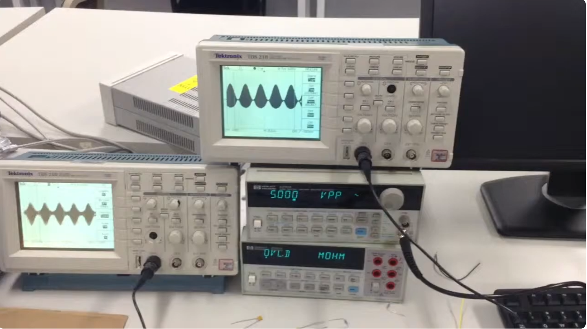

Aerospace professional with 10+ years across Raytheon, SAIC, Virgin Orbit, and Northrop Grumman. Specialist in Frontend Product Development, Critical System Design, Verification & Validation, flight-critical power systems, requirements management, and anomaly resolution for space satellites, aircraft & space avionics, and electronic warfare platforms.

Project 01
Project 03Loria Wang, Sally Law, Chelsea Fraker, Russell Vela, Yuan F. Zheng, Robert Ewing, and Gary Scalzi. "Development of a New Software-Defined S-Band RADAR and Its Use in the Test of Wavelet-Based Waveform."
→ View on IEEE XploreOpen to aerospace, space systems, defense, and advanced tech engineering roles.